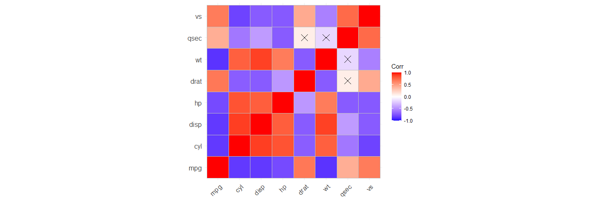
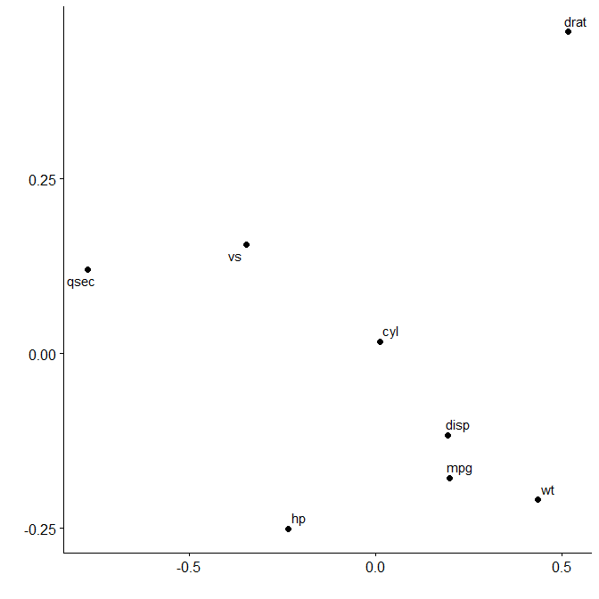

‘corx’ aims to be a Swiss Army knife for correlation matrices. Formatting correlation matrices for academic tables can be challenging. ‘corx’ does all the heavy lifting for you. It runs the correlations, and stores all relevant results in a list. Results can be formatted into data.frames which can then easily be rendered into tables in a variety of formats.
Installation
You can install the released version of corx from CRAN with:
install.packages("corx")To try features in development, you can install corx from github
remotes::install_github("conig/corx@devel")Basic usage
The simplest way to use corx is to supply it with a data.frame, which houses numeric variables.
library(corx)
x <- corx(mtcars)
x
#> corx(data = mtcars)
#>
#> ----------------------------------------------------------------------------
#> mpg cyl disp hp drat wt qsec vs am
#> ----------------------------------------------------------------------------
#> mpg - -.85*** -.85*** -.78*** .68*** -.87*** .42* .66*** .60***
#> cyl -.85*** - .90*** .83*** -.70*** .78*** -.59*** -.81*** -.52**
#> disp -.85*** .90*** - .79*** -.71*** .89*** -.43* -.71*** -.59***
#> hp -.78*** .83*** .79*** - -.45** .66*** -.71*** -.72*** -.24
#> drat .68*** -.70*** -.71*** -.45** - -.71*** .09 .44* .71***
#> wt -.87*** .78*** .89*** .66*** -.71*** - -.17 -.55*** -.69***
#> qsec .42* -.59*** -.43* -.71*** .09 -.17 - .74*** -.23
#> vs .66*** -.81*** -.71*** -.72*** .44* -.55*** .74*** - .17
#> am .60*** -.52** -.59*** -.24 .71*** -.69*** -.23 .17 -
#> gear .48** -.49** -.56*** -.13 .70*** -.58*** -.21 .21 .79***
#> carb -.55** .53** .39* .75*** -.09 .43* -.66*** -.57*** .06
#> gear carb
#> mpg .48** -.55**
#> cyl -.49** .53**
#> disp -.56*** .39*
#> hp -.13 .75***
#> drat .70*** -.09
#> wt -.58*** .43*
#> qsec -.21 -.66***
#> vs .21 -.57***
#> am .79*** .06
#> gear - .27
#> carb .27 -
#> ----------------------------------------------------------------------------
#> Note. * p < 0.05; ** p < 0.01; *** p < 0.001Partial correlations
To calculate correlations controlling for other variables, use the ‘z’ argument.
x <- corx(mtcars, z = wt, caption = "Correlations controlling for weight")
x
#> corx(data = mtcars, z = wt, caption = "Correlations controlling for weight")
#>
#> Correlations controlling for weight
#> -------------------------------------------------------------------------------
#> mpg cyl disp hp drat qsec vs am gear carb
#> -------------------------------------------------------------------------------
#> mpg - -.56** -.34 -.55** .18 .55** .44* .00 -.06 -.40*
#> cyl -.56** - .72*** .68*** -.33 -.74*** -.73*** .04 -.07 .34
#> disp -.34 .72*** - .60*** -.24 -.62*** -.57*** .07 -.10 .04
#> hp -.55** .68*** .60*** - .04 -.80*** -.57*** .39* .42* .69***
#> drat .18 -.33 -.24 .04 - -.05 .08 .43* .50** .34
#> qsec .55** -.74*** -.62*** -.80*** -.05 - .79*** -.49** -.39* -.65***
#> vs .44* -.73*** -.57*** -.57*** .08 .79*** - -.36* -.17 -.44*
#> am .00 .04 .07 .39* .43* -.49** -.36* - .67*** .54**
#> gear -.06 -.07 -.10 .42* .50** -.39* -.17 .67*** - .71***
#> carb -.40* .34 .04 .69*** .34 -.65*** -.44* .54** .71*** -
#> -------------------------------------------------------------------------------
#> Note. * p < 0.05; ** p < 0.01; *** p < 0.001Asymmetric correlation matrices
Sometimes you only want the relationships for a subset of variables. Asymmetric matrices are useful in these instances. The arguments ‘x’ and ‘y’ can be used to achieve this. ‘x’ sets row variables, ‘y’ sets column variables.
x <- corx(mtcars, x = c(mpg, wt))
x
#> corx(data = mtcars, x = c(mpg, wt))
#>
#> -------------------
#> mpg wt
#> -------------------
#> mpg - -.87***
#> wt -.87*** -
#> -------------------
#> Note. * p < 0.05; ** p < 0.01; *** p < 0.001
x <- corx(mtcars,
x = c(mpg, wt),
y = c(hp, gear, am))
x
#> corx(data = mtcars, x = c(mpg, wt), y = c(hp, gear, am))
#>
#> ---------------------------
#> hp gear am
#> ---------------------------
#> mpg -.78*** .48** .60***
#> wt .66*** -.58*** -.69***
#> ---------------------------
#> Note. * p < 0.05; ** p < 0.01; *** p < 0.001Changing formatting
Users can further customise the table for publication. For instance, the numbers of significance stars can be changed, the area above the diagonal omitted, and captions and notes added.
x <- corx(mtcars[,1:5],
stars = c(0.05),
triangle = "lower",
caption = "An example correlation matrix")
x
#> corx(data = mtcars[, 1:5], stars = c(0.05), triangle = "lower",
#> caption = "An example correlation matrix")
#>
#> An example correlation matrix
#> -------------------------------
#> 1 2 3 4
#> -------------------------------
#> 1. mpg -
#> 2. cyl -.85* -
#> 3. disp -.85* .90* -
#> 4. hp -.78* .83* .79* -
#> 5. drat .68* -.70* -.71* -.45*
#> -------------------------------
#> Note. * p < 0.05Adding descriptive statistics
We can also add in descriptive statistics easily.
x <- corx(mtcars[,1:5],
stars = c(0.05, 0.01, 0.001),
triangle = "lower",
caption = "An example correlation matrix",
describe = c(M = mean, SD = sd, kurtosis))
x
#> corx(data = mtcars[, 1:5], stars = c(0.05, 0.01, 0.001), triangle = "lower",
#> caption = "An example correlation matrix", describe = c(M = mean,
#> SD = sd, kurtosis))
#>
#> An example correlation matrix
#> -------------------------------------------------------------
#> 1 2 3 4 M SD kurtosis
#> -------------------------------------------------------------
#> 1. mpg - 20.09 6.03 2.80
#> 2. cyl -.85*** - 6.19 1.79 1.32
#> 3. disp -.85*** .90*** - 230.72 123.94 1.91
#> 4. hp -.78*** .83*** .79*** - 146.69 68.56 3.05
#> 5. drat .68*** -.70*** -.71*** -.45** 3.60 0.53 2.44
#> -------------------------------------------------------------
#> Note. * p < 0.05; ** p < 0.01; *** p < 0.001To add descriptive columns describe can be set to any combination of the following values: c(“mean”,“sd”,“median”,“iqr”,“var”,“skewness”,“kurtosis”).
Alternatively, you can pass a list of named functions:
x <- corx(mtcars[,1:8], describe = list(Mean = function(x) mean(x),
SD = function(x) sd(x)))
x
#> corx(data = mtcars[, 1:8], describe = list(Mean = function(x) mean(x),
#> SD = function(x) sd(x)))
#>
#> ---------------------------------------------------------------------------
#> mpg cyl disp hp drat wt qsec vs Mean
#> ---------------------------------------------------------------------------
#> mpg - -.85*** -.85*** -.78*** .68*** -.87*** .42* .66*** 20.09
#> cyl -.85*** - .90*** .83*** -.70*** .78*** -.59*** -.81*** 6.19
#> disp -.85*** .90*** - .79*** -.71*** .89*** -.43* -.71*** 230.72
#> hp -.78*** .83*** .79*** - -.45** .66*** -.71*** -.72*** 146.69
#> drat .68*** -.70*** -.71*** -.45** - -.71*** .09 .44* 3.60
#> wt -.87*** .78*** .89*** .66*** -.71*** - -.17 -.55*** 3.22
#> qsec .42* -.59*** -.43* -.71*** .09 -.17 - .74*** 17.85
#> vs .66*** -.81*** -.71*** -.72*** .44* -.55*** .74*** - 0.44
#> SD
#> mpg 6.03
#> cyl 1.79
#> disp 123.94
#> hp 68.56
#> drat 0.53
#> wt 0.98
#> qsec 1.79
#> vs 0.50
#> ---------------------------------------------------------------------------
#> Note. * p < 0.05; ** p < 0.01; *** p < 0.001Making tables
Corx objects can be passed directly to papaja::apa_table(), or knitr::kable().
corx(mtcars[, 1:5], triangle = "lower", describe = c(mean, sd)) |>
knitr::kable(caption = "My correlation matrix")| 1 | 2 | 3 | 4 | mean | sd | |
|---|---|---|---|---|---|---|
| 1. mpg | - | 20.09 | 6.03 | |||
| 2. cyl | -.85*** | - | 6.19 | 1.79 | ||
| 3. disp | -.85*** | .90*** | - | 230.72 | 123.94 | |
| 4. hp | -.78*** | .83*** | .79*** | - | 146.69 | 68.56 |
| 5. drat | .68*** | -.70*** | -.71*** | -.45** | 3.60 | 0.53 |
My correlation matrix
Making plots
Correlation matrices
There are many useful functions for plotting correlation matrices. ‘corx’ contains a plot function which uses the ‘ggcorrplot’ package.
plot(x)
Multidimensional scaling
Multidimensional scaling enables similarities between variables to be converted to 2D distances. This lets us visualise how variables cluster together.
plot_mds(x)
We can see that variables in mtcars cluster together in two separate groups. If we want to highlight this we can request two clusters to be marked.
plot_mds(x, 2)You can see that miles per gallon, the number of cylinders, the displacement rate, and the weight of the car are all closely related.